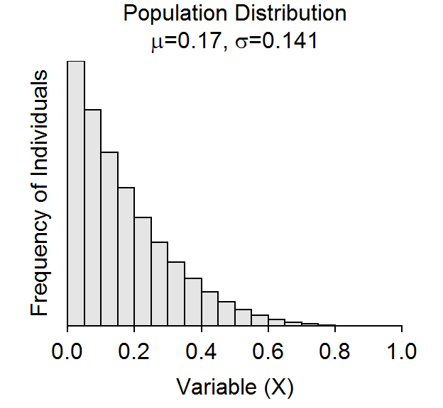

Expectations Based on the CLT

Repeat Class Exercise 2 for the two additional situations below.
Situation 2
Suppose the population has the characteristics shown in the figure below.

- What is the shape, center, and dispersion of this population?
- What would you expect, based on the CLT, the sampling distribution of the sample means to look like for n=10, 25, and 50. Record your expectations in the appropriate cells of a table like that above.
Situation 3
Suppose the population has the characteristics shown in the figure below.

- What is the shape, center, and dispersion of this population?
- What would you expect, based on the CLT, the sampling distribution of the sample means to look like for n=10, 25, and 50. Record your expectations in the appropriate cells of a table like that above.